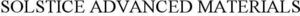

Trade Mark Journal No.2025/047 21 November 2025
WO0000001863751 (1,4,5,6,9,17,22,24)
Office of origin: United States of America
Date of International Registration:27 February 2025
Date of designation in the UK:
27 February 2025

International priority date claimed: 7 February 2025
(Mauritius)
- Class 1
- Chemical products for use in industry; industrial chemicals; gaseous chemicals for use as propellants and dispersants; fluorocarbon refrigerants; refrigerants; refrigerants for use in commercial refrigeration applications; foam blowing agents for use in commercial products; coolant gases; chemicals for the manufacture of pigments; asphalt additives; chemical additives; synthetic resins and polymers; oxidized polyethylenes; maleated polyethylene; maleated polypropylenes; ethylene vinyl acetate copolymers; high-density oxidized polyethylene; ethylene acrylic acetate copolymers; low molecular weight ionomers; synthetic polymers for use in electrical and electronic applications, electronic displays, electrophoretic displays, organic light-emitting diode (OLED) displays, active-matrix organic light-emitting diode (AMOLED) displays, electronic sensors, electronic touch screens, electronic logic circuitry, radio frequency identification devices, conductors, semi-conductors or di-electric insulators; polymers for use in the production of coatings and surface coatings used in electronic devices; high purity solvents for high-performance liquid chromatography (HPLC), gas chromatography, pesticide residue analysis and spectrophotometry, analytical labs and lab applications, and pharmaceutical manufacturing; chemicals used for cleaning and etching semiconductors during manufacturing; stannous fluoride; coolant gases; refrigerants.
- Class 4
- Industrial oils and greases; fuel gases; thermal greases for use as an interface between CPU heat sinks and heat sources; waxes; polyethylene waxes; polypropylene waxes; polyolefin waxes; wax blends; micronized polyolefin waxes.
- Class 5
- Stannous fluoride for dental use.
- Class 6
- Common metals and their alloys excluding metal materials for building and construction; metal sputtering targets; semiconductor packaging parts in the nature of precision metal components, namely, heat spreaders; high purity metals for use in manufacturing semiconductor materials.
- Class 9
- Anodes for use in lithography machines.
- Class 17
- Synthetic fibers for use in manufacturing; plastics and resins in extruded form for use in manufacture; packing, stopping and insulating materials; composite materials composed of high-performance fibers; fiber reinforcing materials for vehicle armor and other ballistic applications; thermally insulating interface materials, namely, thermally conductive gap pads, gap fillers, phase change materials and thermal hybrids for industrial and commercial use.
- Class 22
- Raw fibrous textile materials; polyethylene fibers; raw fibrous textile materials including polyethylene fiber; synthetic fibers; fibers; composite materials made of high-performance fibers used in textiles for bulletproof vests and military helmets.
- Class 24
- Textile fabrics made of synthetic fibers for use in the manufacture of industrial protective clothing, aprons and protective gear; laminated fabrics; textiles and substitutes for textiles; ballistic resistant fabrics for use in the production of bulletproof and blast proof clothing, shoes and bullet proof and blast proof garments and shields; semi-finished plastic products, namely, fabrics for use in the manufacture of protective clothing and helmets and clothing and helmets in hard armor.
US Athens SpinCo LLC
Representative: Nadine H. Jacobson Fross Zelnick Lehrman & Zissu, P.C., 151 West 42nd St., 17th Fl., New York NY 10036, UNITED STATES OF AMERICA